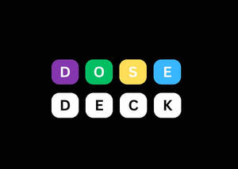
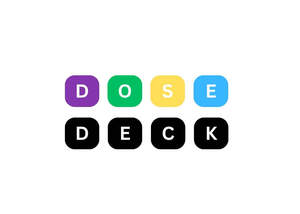
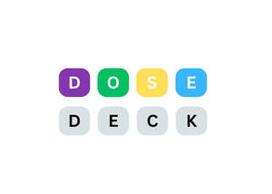

Trade Mark Journal No.2025/047 21 November 2025
UK00004292998 11 November 2025 (9,16,41,42)
Mark 1

Mark 2

Mark 3

- Class 9
- Educational computer software for use in the field of mental health, mental wellbeing and stress management; Downloadable software in the nature of a mobile application for use in the field of mental health, mental wellbeing and stress management; Application software for mobile phones for use in the field of mental health, mental wellbeing and stress management; Downloadable electronic publications and instructional materials for use in the field of mental health, mental wellbeing and stress management; Software applications and downloadable mobile applications for use in the field of mental health, mental wellbeing and stress management.
- Class 16
- Instructional and teaching materials for use in the field of mental health, mental wellbeing and stress management; Educational material for use in the field of mental health, mental wellbeing and stress management; Paper teaching materials for use in the field of mental health, mental wellbeing and stress management; Printed educational materials for use in the field of mental health, mental wellbeing and stress management; Printed cards for use in the field of mental health, mental wellbeing and stress management; Flashcards for use in the field of mental health, mental wellbeing and stress management; Educational playing cards for use in the field of mental health, mental wellbeing and stress management.
- Class 41
- Education in the field of mental health, mental wellbeing and stress management; Educational services in the field of mental health, mental wellbeing and stress management; Educational information services in the field of mental health, mental wellbeing and stress management; Educational advisory services in the field of mental health, mental wellbeing and stress management; Educational services provided to industry in the field of mental health, mental wellbeing and stress management; Educational and training services relating to healthcare in the field of mental health, mental wellbeing and stress management; Online education services in the field of mental health, mental wellbeing and stress management; Adult education services in the field of mental health, mental wellbeing and stress management; Health and wellness training in the field of mental health, mental wellbeing and stress management; Education and training in the field of occupational health and safety, limited to mental health, mental wellbeing and stress management Arranging and conducting of training courses in the field of mental health, mental wellbeing and stress management; Training services for personnel.
- Class 42
- Scientific analysis in the field of mental health, mental wellbeing and stress management; Scientific research and development in the field of mental health, mental wellbeing and stress management; Medical research in the field of mental health, mental wellbeing and stress management; Scientific research in the field of mental health, mental wellbeing and stress management; Scientific research in the field of social medicine.
Curated Psychology Ltd
Representative: Harper James Ltd